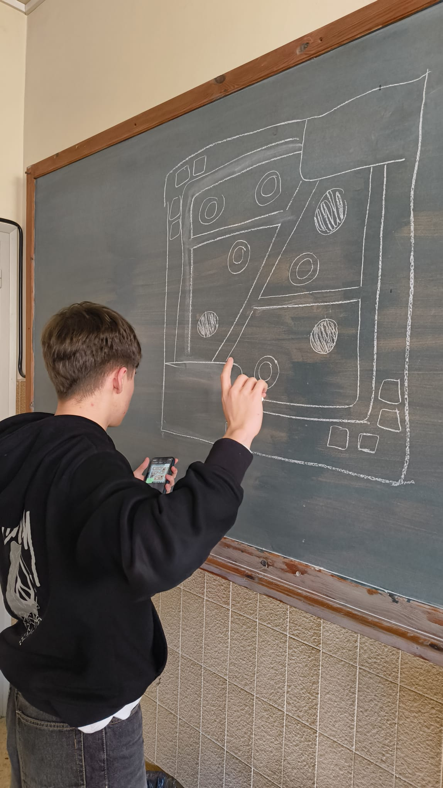
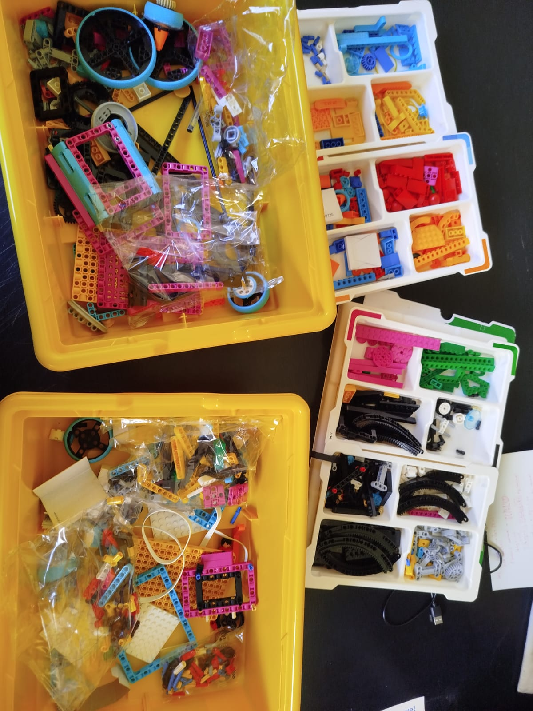
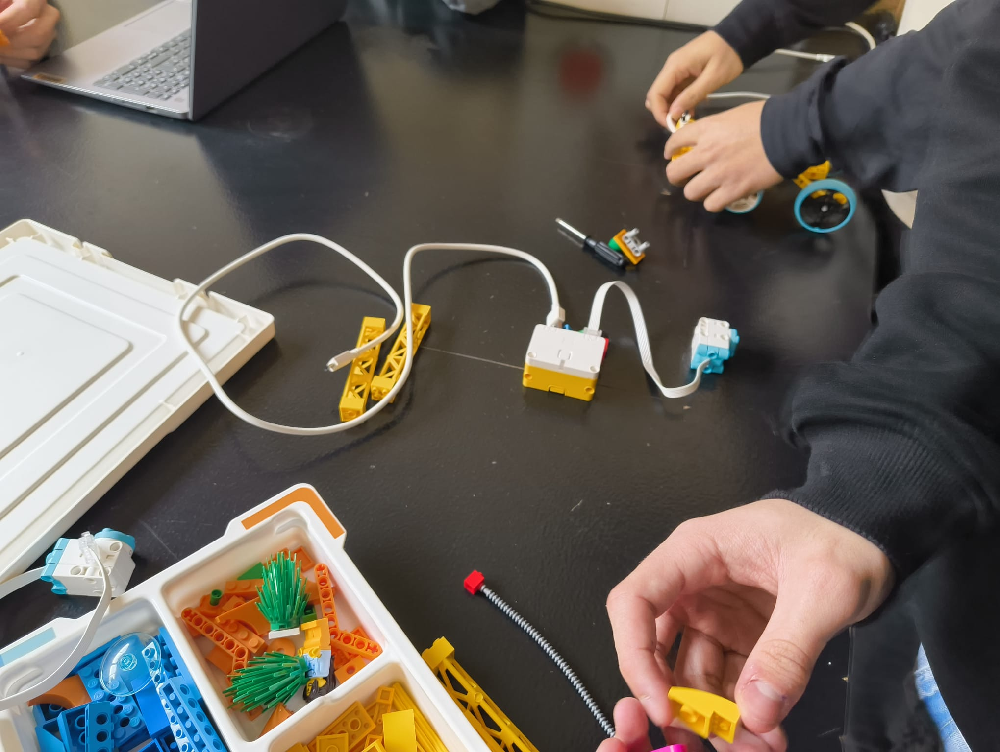
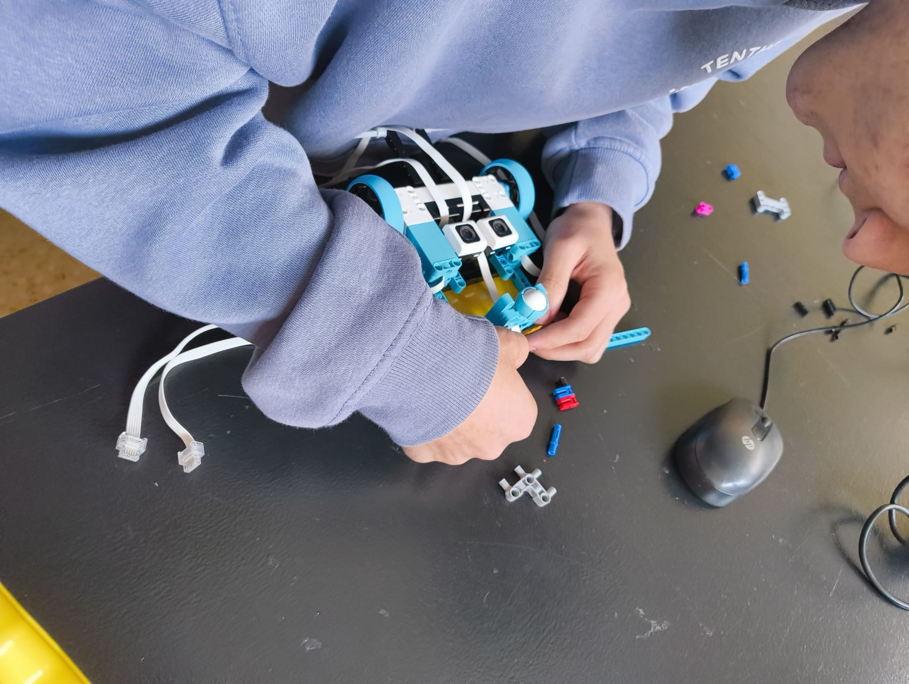
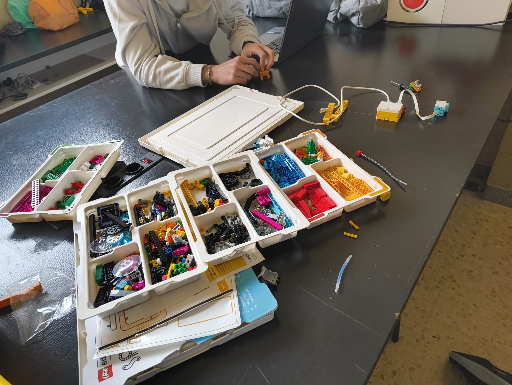
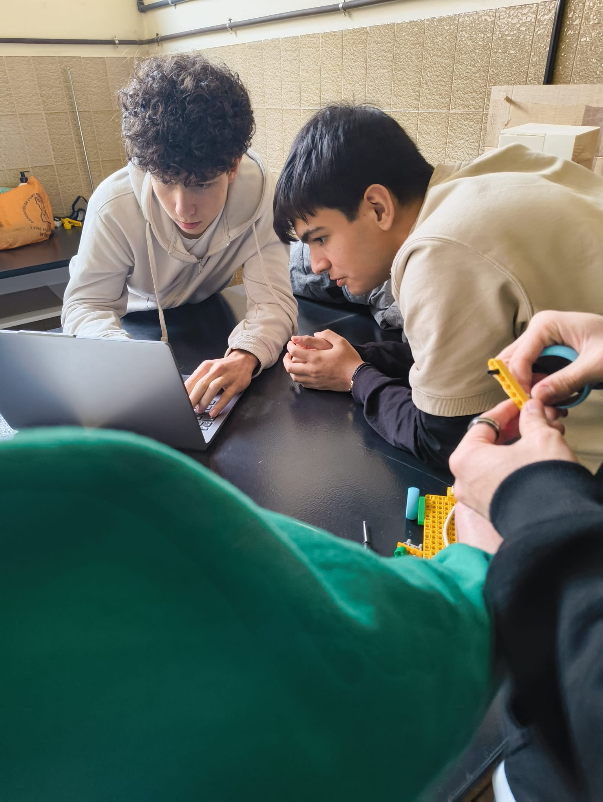
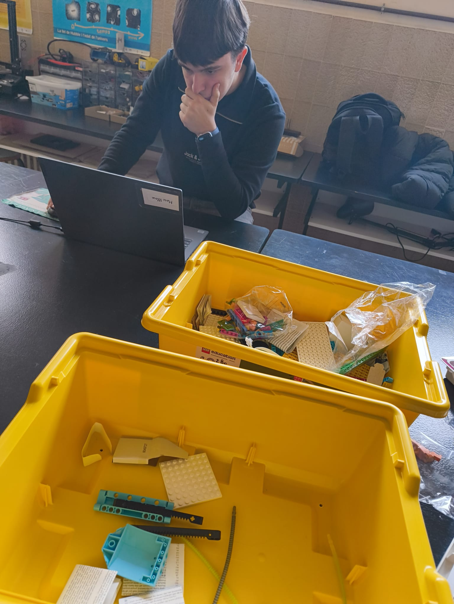

En esta página, mostraremos todo el proceso llevado a cabo para el proyecto, desde el inicio y las planificaciones, hasta la programación y pruebas finales.
Nos llegaron los planos y nuestro compañero Mateo Parrón los analizó detenidamente, tras eso, los dibujó en la pizarra para que pudieramos tener una mejor comprensión del diseño. Gracias a esto, nos dimos cuenta de que necesitabamos un set de "Lego Spike Prime", así pues, nos pusimos manos a la obra con nuestra profesora Ana y compramos las piezas.


El montaje del robot fué bastante duro, tuvimos que repetir esta fase varias veces, dado que muchos de los prototipos no cumplian las funciones necesarias para completar satisfactoriamente el reto propuesto por la apertix. En uno de estos diseños nos equivocamos en la conexión de los sensores, lo que nos obligó a desmontar y volver a ensamblar gran parte del robot. Nos pasamos bastante tiempo construyendo la garra, probamos todas las ideas que nos surgieron, llegamos al punto en que nos dimos cuenta de que la más simple era la más efectiva. También construimos todo el sistema para subida y bajada de las garras gracias a los componentes que ofrecia la caja de Legos.
La garra nos ocasionó bastantes problemas ya que necesitabamos una garra capaz de agarrar objetos bastante gruesos como cajas o ligeros como flores o arboles, además la garra debia tener una precisión milimetrica para que diera unos buenos resultados. También hemos tenido problemas con los sensores y con el sistema de engranajes de subida y bajada, pero todo lo acabamos solucionando.



El codigo ha sido creado a medida que haciamos el robot pero la mayor parte de este fue creado después de haberlo terminado, ya que si haciamos el código al mismo tiempo que construíamos el robot, no habría funcionado correctamente. Varias partes del código fueron refinadas durante las pruebas finales y se han distribuido en varias partes, entre ellas, los sensores, motores y el sistema de control.
Tuvimos que ir probando poco a poco las funciones de cada cosa, sin embargo el codigo general fue desarrollado poco a poco y asegurandonos de que cumpliera todos los requisitos que pedia el reto. Finalmente acabamos con una programación eficiente. y efectiva, la cual nos resultó perfecta para el funcionamiento del robot.

